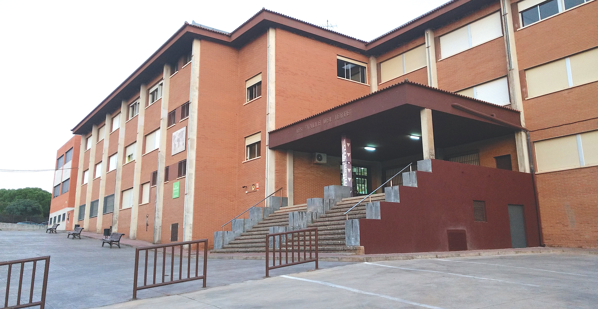
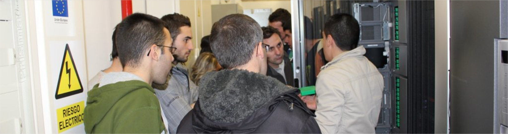
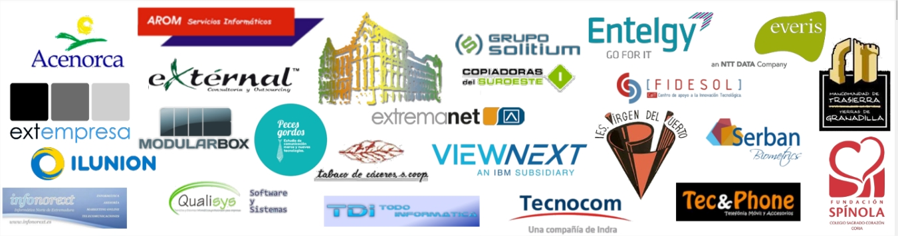

El IES Valle del Jerte es uno de los centros de referencia en la ciudad de Plasencia. Cuenta con 769 alumnos pertenecientes a:
- Educación Secundaria Obligatoria
- Formación Profesional Básica
- Ciclos Formativos de Grado Medio
- Ciclos Formativos de Grado Superior

Ofrecemos una amplia oferta de Formación Profesional reglada de la familia de Informática y Comunicaciones:
- Formación Profesional Básica de **Informática de Oficina**
- Ciclo Formativo de Grado Medio de **Sistemas Microinformáticos y Redes**
- Ciclo Formativo de Grado Superior de **Desarrollo de Aplicaciones Multiplataforma**
- Ciclo Formativo de Grado Superior de **Desarrollo de Aplicaciones Web**
- Ciclo Formativo de Grado Superior de **Administración de Sistemas Informáticos en Red**

Colaboramos con decenas de empresas del sector para ofrecer oportunidades de empleo para nuestros alumnos egresados:

Dirección: Calle Pedro y Francisco González, s/n, 10600 Plasencia, Cáceres
Teléfono: 927 01 77 74
Email: ies.valledeljerte@edu.juntaex.es
[Placeholder Mapa de Google]
Disponemos de un Campus Virtual bajo la tecnología de Moodle para dar soporte a toda la docencia presencial de nuestros Ciclos Formativos:

Puedes acceder a él a través de este enlace.
Curso 2018/19 - Diseño de interfaces Web